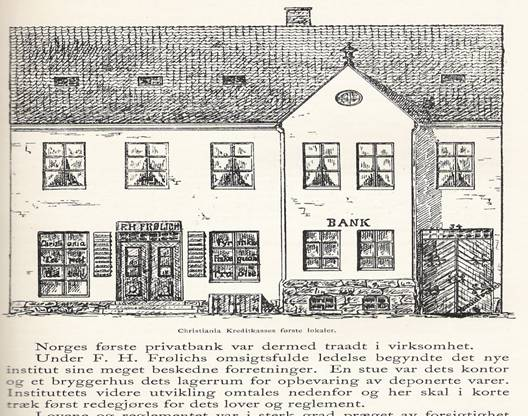
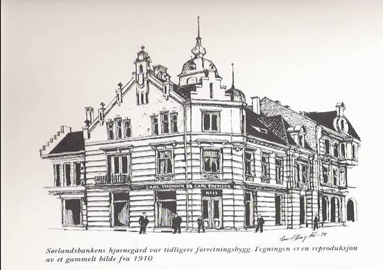
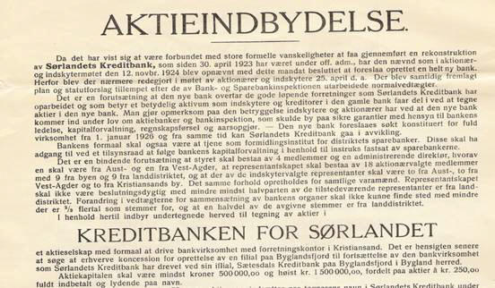
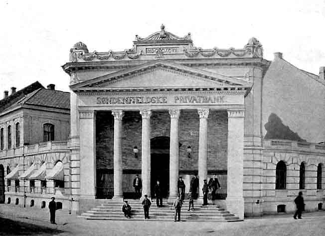
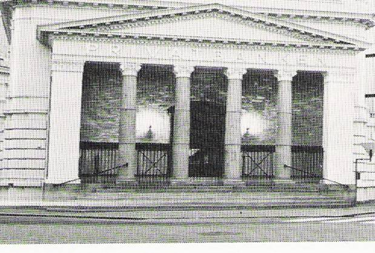
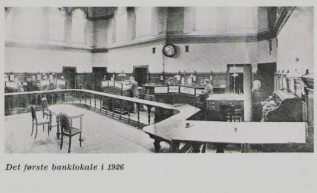
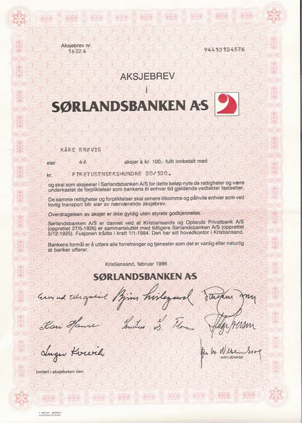

Bankhistorie i Kristiansand
- fra fjærpenn til internett i bank
Kåre Brøvig, pensjonert banksjef og ansatt i Kreditbanken for Sørlandet/Sørlandsbanken 1950-1989.
CHRISTIANIA KREDITKASSE FRA 1848
FRIGJØRE NORGE FRA UTENLANDSKE LEVERANDØRERS KREDITT
Vi hadde tidligere pengeutlånere som opererte helt privat, ofte med høye rentesatser og ubarmhjertige inndrivelsesmetoder.
Vår første forretningsbank er Christiania Kreditkasse fra 1848. Bankens første sjef kjøpmann Fritz Henrich Frølich var formann i styret i Handelens Venner i Oslo. Målsettingen var å frigjøre Norge fra utenlandske leverandørers kreditt og fra import av utenlandske industriartikler.
Dette siste kan vi forstå blant annet ved at Frølich i sin gård Kirkegt.34, hadde noe sånt som 34 forskjellige industrier. Selv satte han i banken og spikket fyrstikker, dyppet dem i sats og solgte dem. Det var Norges første fyrstikker. En stue var bankens kontor, og et bryggerhus var lagerrom for oppbevaring av deponerte varer.
Kjøpmannsstanden skulle få adgang til å reise likvider mot sikkerhet i sine varelagre. Banken skulle på basis av den sikkerhet som dens egenkapital og de deponerte varene representerte, utstede sine egne veksler til kundene, som så skulle diskontere disse i Norges Bank. Banken tok siden opp innskuddsvirksomheten for å få midler til å finansiere kundene uten å være avhengig av Norges Bank og de offentlige låneinnretninger.
I 1862 ble navnet endret til Christiania Bank og Kreditkasse.
Inn og utlån har siden vært kjernen i forretningsbankenes virksomhet.
Bankene vokste etter hvert i individuell kapasitet og i antall. Det største antall forretningsbanker vi har hatt i landet, hadde vi i 1919, med 198 stykker. Nedgangen i antall banker siden 1920 skyldes foruten krisen i 1920-årene, dels den nye bankloven som skjerpet kravene til egenkapital.
I siste halvdel av 1900-tallet er det blitt en konsentrasjon til større forretningsbanker og sparebanker med et utvidet filialnett. Dessuten er det kommet inn utenlandske banker og utenlandsk eierskap.
TO FORRETNINGSBANKER STARTET OPP I KRISTIANSAND I 1926
KREDITBANKEN FOR SØRLANDET A/S
ble opprettet 5/12 1925. Den kom i gang 1. februar 1926
Det er interessant å merke seg formålet i vedtektene:
Bankens formål er å utføre alle forretninger og tjenester som det er vanlig og/eller naturlig at banker utfører.
Videre skal dens formål være å opphjelpe byens og distriktets næringsveier og søke å fremme et godt samarbeid mellom land og by.
Det er også bakens oppgave å tjene som formidlingsinstitutt for distriktets sparebanker.
Banken skulle være en bank for bygd og by. Av styrets valgte medlemmer skulle et av styrets medlemmer være fra Aust-Agder og et fra Vest-Agder. Når det gjelder representantskapet, skulle det bestå av 18 medlemmer valgt av aksjonærene, derav 9 fra byen og 9 fra landdistriktene. Av de 6 innskytervalgte representanter skulle 2 være fra Aust-Agder, 2 fra Vest-Agder og 2 fra Kristiansand.
Aksjeinnbydelse for Kreditbanken for Sørlandet A/S.
Den 1. februar 1926 kom banken i gang i Markensgate 16, på hjørnet mot Rådhusgaten med Jens Langfeldt som adm. direktør. Fra samme tid kunne forgjengeren Sørlandets Kreditbank gå i avvikling.
Forgjengeren Sørlandets Kreditbank avvikles
Fra samme tid kunne forgjengeren Sørlandets Kreditbank gå i avvikling. Det var i november 1915 det ble innbudt til stiftelse. Banken trådte i funksjon i 1916, i en tid da krigskonjunkturene hadde satt fart i spekulasjonsvirksomheten i så mange bransjer. Den kom under offentlig administrasjon 30. april 1923. Den ble ferdig avviklet i 1930 med en totaldividende på 90,1 %. Den kunne muligens ha vært reddet, men tilliten var dessverre borte.
”Det er en forutsetning at den nye bank overtar de gode løpende forretninger som Sørlandets Kreditbank har opparbeidet og som betyr et betydelig aktivum som innskytere og kreditorer i den gamle bank får del i ved at tegne aksjer i den nye bank.” Slik heter det i aksjeinnbydelsen for tegning av aksjer i Kreditbanken for Sørlandet.

Interiør fra Sørlandets Kreditbank og Kreditbanken for Sørlandet.
Kreditbanken for Sørlandet A/S endret i 1965 navn til SØRLANDSBANKEN A/S.
Kristiansands og Oplands Privatbank A/S
Den åpnet 8. september 1926 i den samme bygningen og med den samme banksjef, M. Bøhler, som siden 1922 hadde ledet Søndenfjeldske Privatbank og Handelsbankens filial. Forløperen var distriktets første privatbank, Søndenfjeldske Privatbank, som åpnet sine dører 17. mars 1890. Det var Kristiansands Handelsstands Forening som tok initiativet til starten av Kristiansands og Opplands Privatbank. Det var også tilfelle da Søndenfjeldske Privatbank åpnet sin virksomhet.
Kristiansands og Oplands Privatbank arbeidet til å begynne med mest for byens forretningsstand, men etter hvert kom også landdistriktene inn i bildet. I representantskapet skulle det være 11 fra byen og 5 fra landet.
  SØRLANDSBANKEN A/S
DEN 1. JANUAR 1984 BLE PRIVATBANKEN OG SØRLANDSBANKEN I KRISTIANSAND FUSJONERT OG BLE TIL AGDERBANKEN A/S.
Allerede i 1985 endret AGDERBANKEN A/S navnet til SØRLANDSBANKEN A/S.
Forsøkene med å få til en selvstendig foretningsbank med hovedsete i Kristiansand har tradisjoner tilbake til 20-årene, 1964 og 1979/80. Hovedtrekkene i stortingsmeldinger fra 1960 årene var ønsket om å bygge opp sterke distriktsbanker ved siden av de landsdekkende bankene.
Landsdelskomiteen for Agder og Rogaland - fra 1973 - ville også styrke bankstrukturen i landsdelen. De to forretningsbankene i Kristiansand burde bli en bank. Det ble de omsider, og konsesjon ble gitt 28/7 1983 og starten ble 1.januar 1984.
Næringslivet i landsdelen var inne i en omstillingsprosess i 1984.Arbeidsledigheten vokste. Den store utfordringen var å skaffe flere tusen nye arbeidsplasser. Flere aktører var engasjert: Aust-Agder næringsselskap og Vest-Agder næringsutvalg og et tiltakskontor for de indre bygder.
Kristiansand hadde etablert sitt eget næringsråd og STI hadde et prosjekt på gang for å lage en OIS modell for mindre bedrifter. Agderbanken støttet begge disse tiltakene. Også Agderforskning ble støttet av Agderbanken. Agderbanken ville være med på å skaffe optimisme.
Næringslivet skulle tilbys både finansielle tjenester og konsulenttjenester. For personlige kunder ble økonomisk rådgiving styrket.
Hovedkontoret var i Markensgaten 16 i Kristiansand. Filialer i Kristiansand: Vågsbygd, Grim, Øvre Markens, Rutebilstasjonen, Lund, Kongsgård, Hamresanden, Kjevik.
